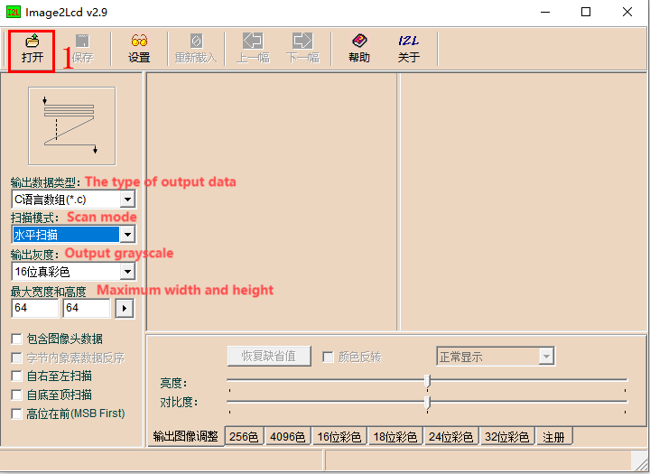
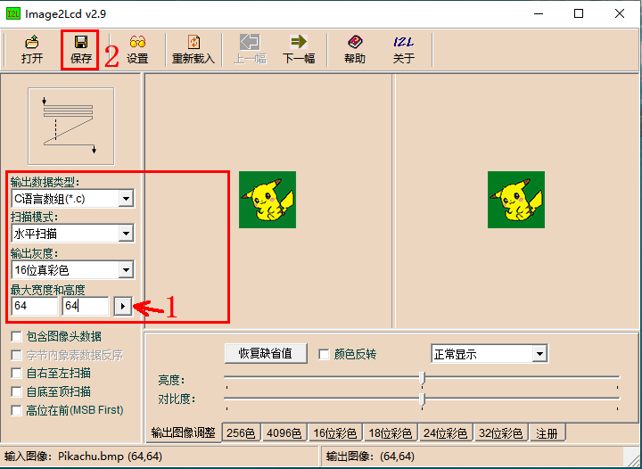
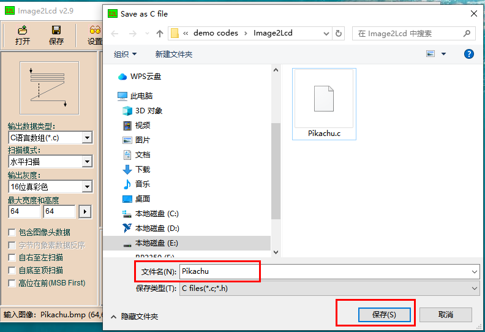
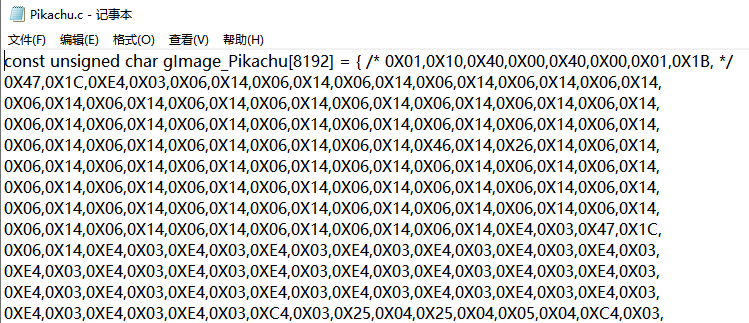
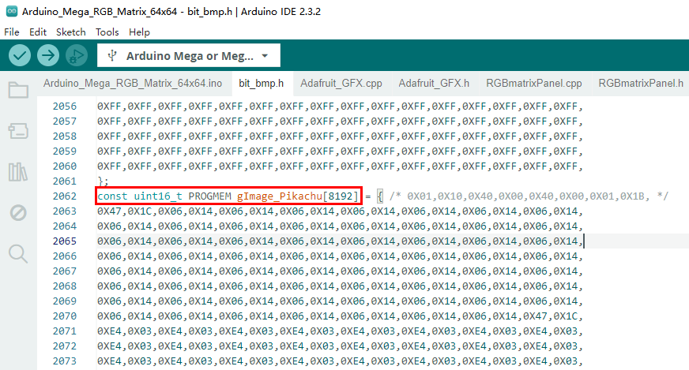
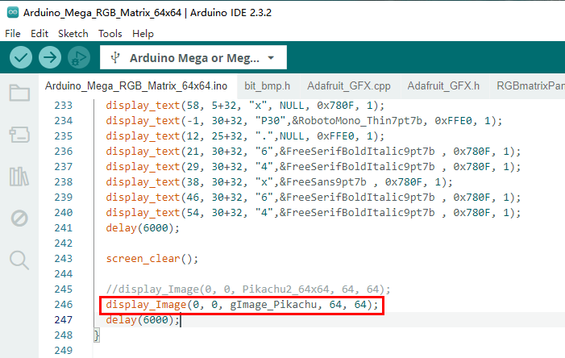

Description:
This tutorial demonstrates the use of an RGB 64x64 matrix panel on the ArduinoMega platform. The same process can be applied to a 64x32 matrix panel, with the only differencebeing the resolution of the image (64x32 in this case).
Description:
This tutorial demonstrates the use of an RGB 64x64 matrix panel on the ArduinoMega platform. The same process can be applied to a 64x32 matrix panel, with the only differencebeing the resolution of the image (64x32 in this case).
1. Prepare the Image
Prepare an RGB888 image (24-bit color depth) with a resolution of 64x64. The image format can be either jpg or bmp.
2. Use Image2Lcd to Convert Image Data
Download the Image2Lcd software for image conversion. Extract and double-click the Image2Lcd.exe file to open the software, as shown in Figure 1 below:

Figure1
Click on "Open" at position "1" in Figure 1, then select the image prepared in Step 1. After opening the image, it should appear as shown in Figure 2. The red box highlights the main settings. Set the following parameters:
· Output Data Type: Select "C Language Array (.c)"
· Scan Mode: Select "Horizontal Scan"
· Output Color Depth: Select "16-bit True Color"
· Maximum Width and Height: Enter "64" for both width and height
After setting these, click the black triangle arrow at position "1" in the red box. Other software settings can follow the configuration shown in Figure 2.：

Figure 2
Click the Save button in Figure 2 (see position "2" in Figure 2) to save the conversion data, as shown in Figure 3. In the pop-up "Save as C file" window, enter the desired file name for the conversion data (see the red box). Then click Save (S). The Pikachu.c file you saved will automatically open, as shown in Figure 4:

Figure 3

Figure 4
3、Image Data Usage
Copy all the contents of the Pikachu.c file from Figure 4 and paste it at the end of the bit_bmp.h file. Then modify the array's type definition as shown in the red box in Figure 5. Next, reference this image data array at the end of the Arduino_Mega_RGB_Matrix_64x64.ino file, as shown in the red box in Figure 6. Finally, verify and upload the code to the Arduino Mega board.

